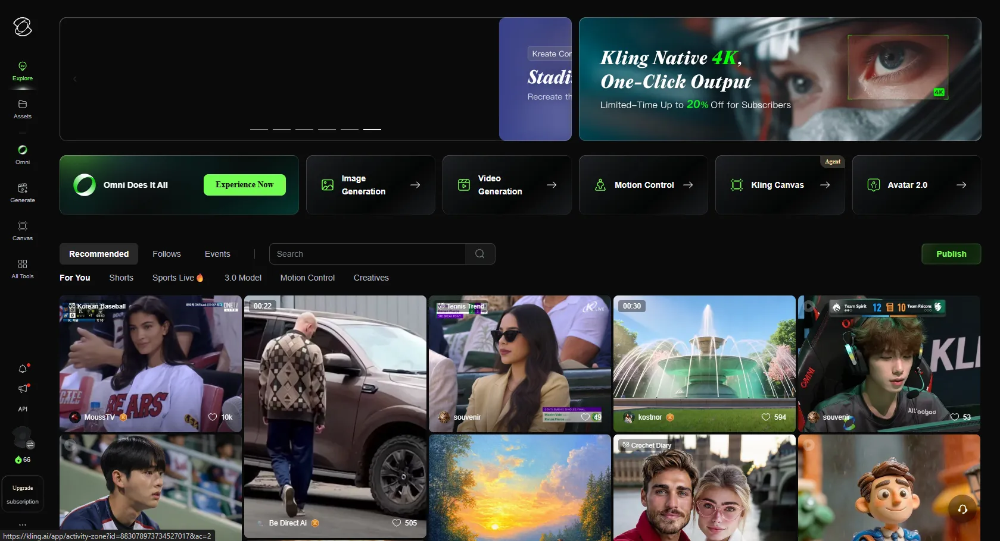
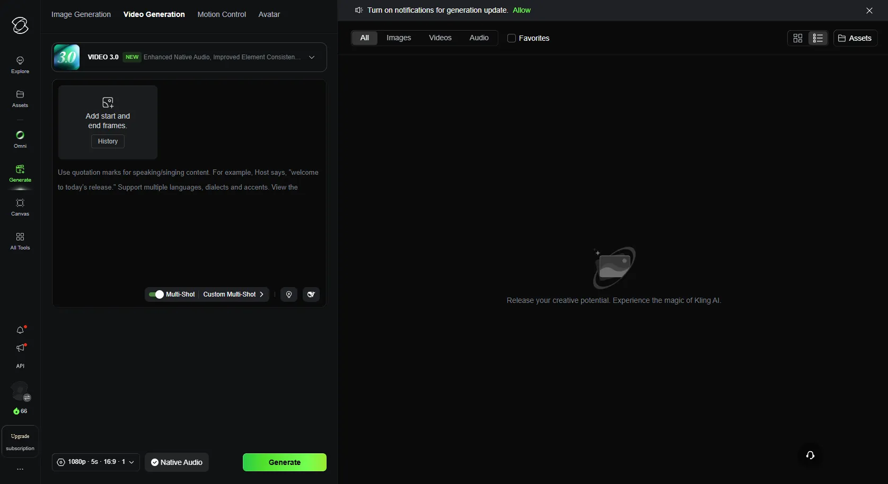
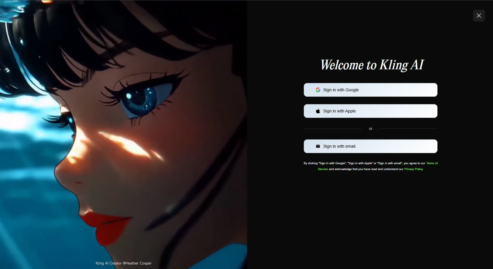
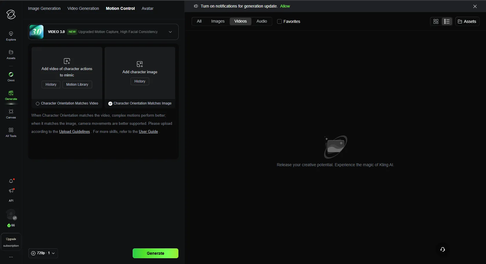
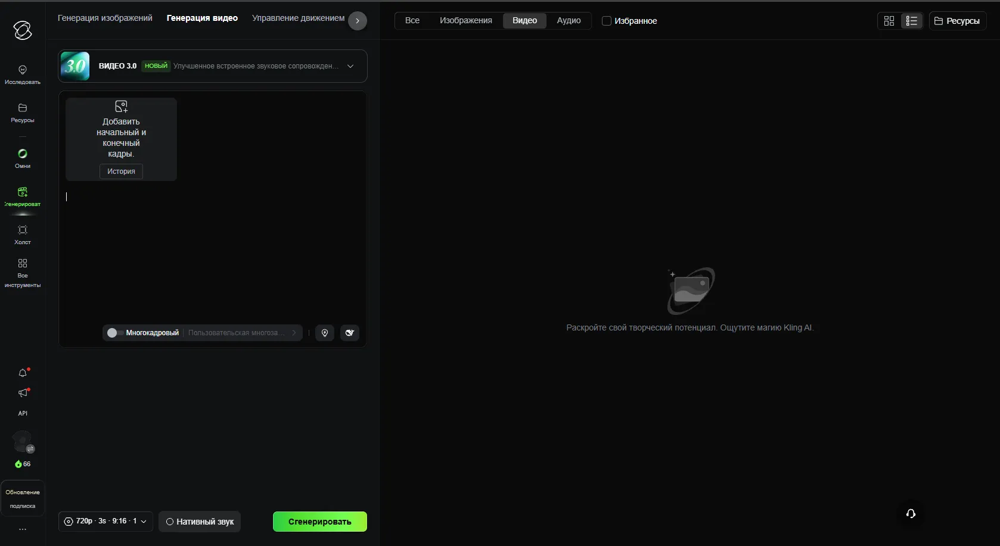

Помните те вирусные видео, где обычный парень превращается в кинозвезду, а движения из танцевального челленджа в точности повторяются совсем другим человеком? Если вы думали, что это сложный монтаж на миллион долларов, у нас хорошие новости. Это Kling AI — китайская нейросеть, которая за пару минут делает то, на что раньше уходили недели работы спецэффектов.
Она не просто накладывает лицо — она переносит пластику, мимику и физику движений, заставляя вашего цифрового двойника жить своей жизнью. Из-за этой реалистичности сервис и стал сверхпопулярным в TikTok.

Сколько стоит генерация?
Генерация одного видео стоит от 10 до 35 кредитов — в зависимости от качества, длительности ролика и выбранного режима. При регистрации вам дают 100 бонусных кредитов, и ещё по 66 бесплатных прилетают каждый день. Ежедневного лимита хватает на 2–6 роликов — достаточно, чтобы устроить личный челлендж и понять, как всё работает.
На бесплатном тарифе видео генерируется в разрешении 720p с водяным знаком. Очереди в часы пик могут достигать 30 минут — это главный минус бесплатной версии.
Что Kling AI умеет, кроме замены лиц
Пока весь мир сходит с ума по функции копирования движений, вот что ещё прячется внутри платформы:
- Текст в видео (Text-to-Video): пишете промпт «Кот-космонавт ест бургер на Марсе», и нейросеть генерит видео. Отлично для креативных концептов.
- Управление камерой (Motion Control): основа того самого тренда. Загружаете референсное видео с желаемым танцем или трюком, а Kling переносит пластику на вашего персонажа.
- Синхронизация губ (Lip Sync): персонажи могут говорить — нейросеть синхронизирует движение губ с аудиодорожкой и даже пытается передать эмоции.
- Генерация длинных сцен: в последней версии можно создавать ролики до 15 секунд с несколькими сменами планов — будто мини-фильм.

Как начать: пошаговая инструкция
1. Регистрация и кредиты
Перейдите на официальный сайт klingai.com и войдите через Google-аккаунт или почту. Сразу проверьте баланс — 100 приветственных кредитов уже будут ждать на счёте.

2. Создание вирусной замены (тренд TikTok)
Это называется функцией Motion Control. Алгоритм действий:
- Найдите видео с чёткими, плавными движениями человека в кадре (танец, кивок, проходка).
- Загрузите видео этого видео.
- Загрузите персонажа которого хотите видеть на видео
- Активируйте опцию соответствия ориентации персонажа.
- Нажимайте "Generate"

3. Генерация видео из текста
Выберите режим Text-to-Video. Опишите сцену по формуле:
Пример: «Девушка в киберпанк-очках идёт по ночному Токио, неоновые огни отражаются в лужах, замедленная съёмка, кинематографичный свет».

Лайфхаки, чтобы результат выглядел на миллион
Чтобы вас не выдала кривая анатомия и эффект «зловещей долины», держите несколько профессиональных советов:
Что дальше?
Эти пять инструментов закрывают основные потребности: тексты, картинки, ответы на вопросы, код. Когда освоишься с ними, переходи к более узким нейросетям — для видео, изображений, текстов. Обо всём этом мы рассказываем в наших подборках.
А если хочешь научиться получать от нейросетей максимум — читай наши гайды по промтам. Правильный запрос — это 80% результата.